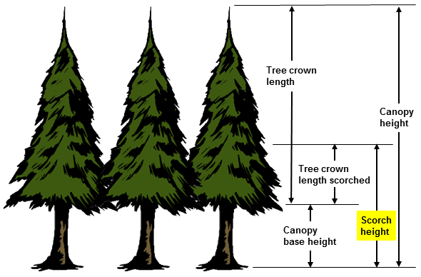

|
Scorch Height |
Scorch height is the maximum vertical height above the ground at which lethal scorching of foliage occurs. Below this height, the temperature in the convection column is greater than or equal to the lethal temperature necessary to kill live crown foliage. This temperature is assumed to be 140 degrees Fahrenheit (60 degrees Celsius).
If both SURFACE and SCORCH modules are selected, midflame wind speed and the flame length in the direction of the spread calculation are used as inputs to SCORCH.
If SURFACE is not selected, either surface fire flame length or surface fireline intensity can be entered.
| I/O | Module | If | Notes |
| Input | MORTALITY | If SCORCH is not selected. | If both MORTALITY and SCORCH are selected, then the scorch height calculated in scorch is used in MORTALITY. |
| Output | SCORCH |
|  |